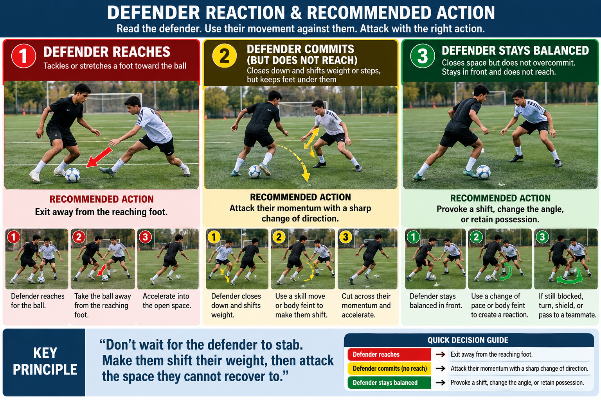

01
Body Feint / Lunge
Sell with shoulder and hip. Push away from the planted foot.
Left leadLunge left, exit right
Right leadLunge right, exit left
10 left + 10 right · finish each rep
One setup. Five moves. Both feet. Forward exit and simple finish.
Keep the same positions and direction of travel. P2 serves from ahead of P1, and P1 never turns away from goal.
All five columns use the shared setup above. Complete 10 left-foot-lead and 10 right-foot-lead repetitions per part. Each repetition ends with a simple finish.
Sell with shoulder and hip. Push away from the planted foot.
Circle the lead foot around the front of the ball, then explode away.
Two sharp inside-foot touches across the defender's line.
Draw the defender with a lunge, then transfer the ball across.
Sell the scissors, then transfer the ball into the opposite lane.
Build clean finishing first, then connect the skills. Serve from ahead in the player's direction of travel.
P2 passes back from ahead. P1 arrives facing goal and finishes first time or with a controlled second touch.
First touch creates the shooting lane. Next action is a composed finish. No turn.
Use one of the five skills around the large cone. Exit toward goal and shoot.
Alternate left and right exits. Add a passive defender only after technique is consistent.
Actual existing footage, not substitute videos. New skill-specific clips can be added when available.
Your uploaded finishing recording. Use it for timing and the shooting action; follow the forward-facing passing setup above.
Existing GitHub recording illustrating body feint, exit touch, acceleration and finish.
A separate finishing technique block using your new recording. The diagram is a suggested 2-player setup, not a measurement of the filmed positions.
Wide Angle Finish - your uploaded demonstration.
Demonstration: Balance to Ball Transition - body feint. Use the same movement principles for Scissors, La Croqueta, and both combinations.
Original supplied recording - body control into a feint and ball action.
Actual reference clip: the attacker draws the defender into a challenge, then escapes into space.
Apply to all five moves: Feint, Scissors, La Croqueta, Lunge + La Croqueta, and Scissors + La Croqueta. The exact foot action changes, but the exit trigger stays the same.
2-player practice: P2 acts as a passive defender near the large cone and reaches toward the ball without tackling. P1 performs the move and exits forward to finish. Alternate roles after each repetition.
Read the defender before choosing your exit. The defender's reaction determines your next action.
